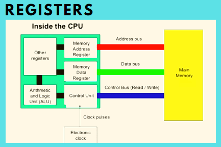

Register

In computer science, a register is an important component of digital devices that stores data and instructions for quick processing. It serves as a temporary storage area where information can be accessed and manipulated quickly in order to carry out complex tasks. Registers are the most basic type of memory in computers and they play a critical role in helping machines process data efficiently. In this blog, we’ll explore what registers are, how they work, and why they are so important for modern-day computing.
Registers are a type of computer memory built directly into the processor or CPU (Central Processing Unit) that is used to store and manipulate data during the execution of instructions. A register may hold an instruction, a storage address, or any kind of data (such as a bit sequence or individual characters).
A register is composed of multiple flip-flops, which are electronic circuits capable of storing a single bit of information, which is represented through binary data – either a 0 or a 1. By combining multiple flip-flops, registers can store larger binary values, such as bytes or words.
Registers also contain control logic circuitry, which allows it to coordinate the flow of data and instructions within the CPU. This can include operations such as decoding control signals, performing data manipulation like data loading, storing, or arithmetic operations, and using mulitplexers to route data to a specific location within the register.
Together, flip-flops and control logic work in partnership within registers. Flip-flops provide the storage capacity, while control logic facilitates the coordination of data transfer, manipulation, and synchronization with other components of the CPU. This enables registers to store and process data efficiently during the execution of instructions.
The number and size of registers in a CPU are determined by the processor design and can have a significant impact on its performance and capabilities. Most modern computer processers include:
8-bit registers: These registers can store 8 bits of data (1 byte). They are often used for basic arithmetic operations and data manipulation.
16-bit registers: These registers can store 16 bits of data (2 bytes). They are commonly found in older processors or in specific architectures that require 16-bit operations.
32-bit registers: These registers can store 32 bits of data (4 bytes). They are widely used in many processors and are capable of handling larger data sizes and more complex calculations.
64-bit registers: These registers can store 64 bits of data (8 bytes). They are prevalent in modern processors and offer increased computational power and memory addressing capabilities.
Modern PCs today most often have 32-bit or 64-bit registers and are referred to as the 32-bit processors and 64-bit processors we often hear about. This indicates the size or width of the processor's registers and the amount of data the processor can handle in a single operation.
In some specialized processors or architectures, you may also find larger register sizes, such as 128-bit, 256-bit, or even larger registers. These larger registers are often used for specific purposes like vector processing or cryptographic operations, where parallelism and large data sets are involved.